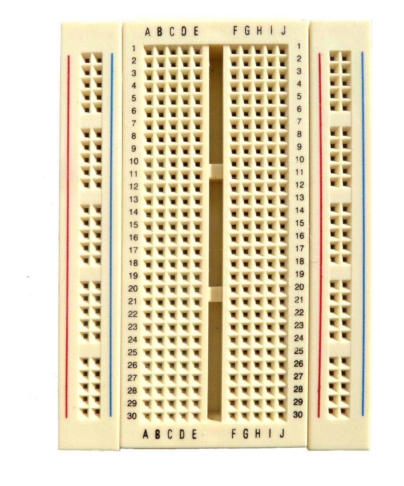
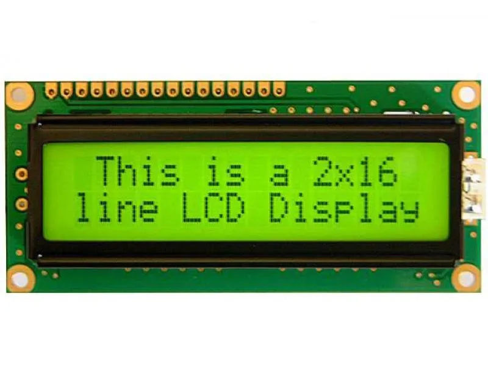
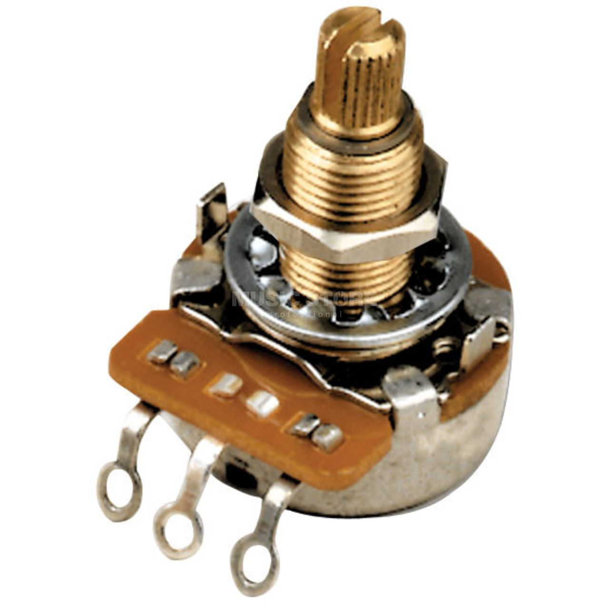
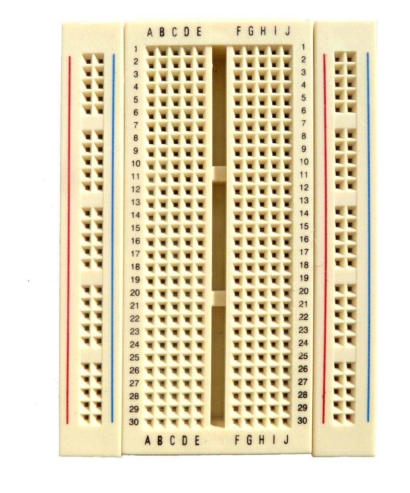
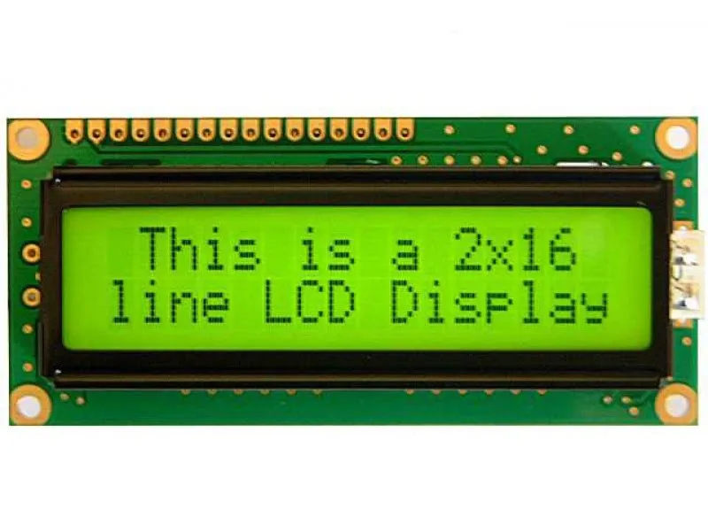
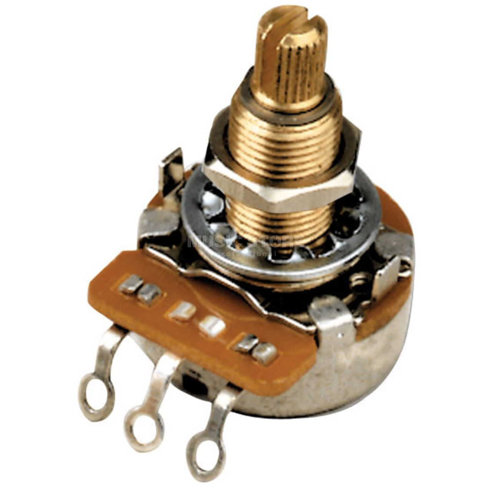
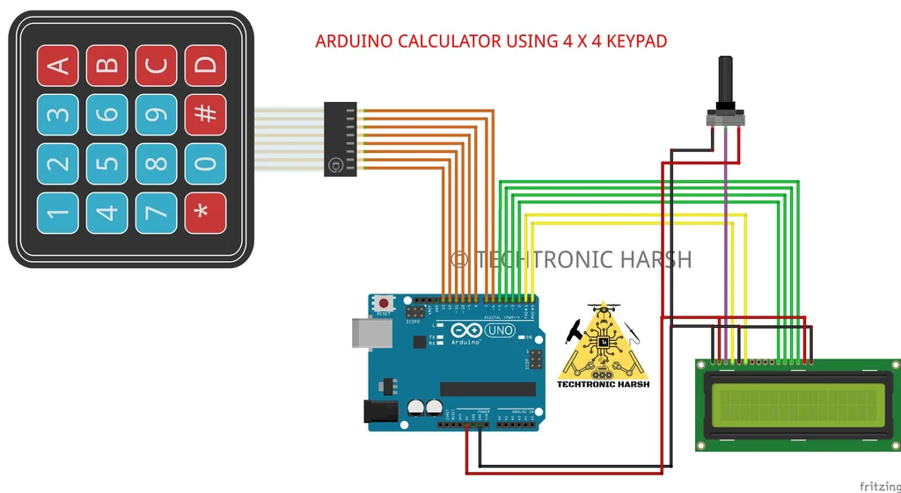

DIY Arduino Calculator
Create a simple calculator using an Arduino Uno R3, an LCD screen, and a 4x4 keypad. This project will teach you how to handle user input and display results on an LCD screen. Follow the steps below to build your calculator.
Components Needed
- Arduino Uno R3
- Breadboard
- 16x2 LCD Screen
- Potentiometer (for contrast adjustment)
- 4x4 Keypad
- Wires and Jumper Cables
- USB Cable (to connect the Arduino board to the computer)
 







Wiring Diagram
Assemble the components on the breadboard and connect them to the Arduino as shown in the diagram below:
- LCD Pins (RS, E, D4-D7) connected to Arduino A0-A5
- Keypad rows connected to Arduino pins 6-9
- Keypad columns connected to Arduino pins 2-5
- Potentiometer connected to adjust LCD contrast
Understanding the Wiring
Each component plays a critical role in the functionality of your calculator:
- LCD Screen: Displays user input and results. The contrast is controlled using the potentiometer for better readability.
- 4x4 Keypad: Allows user input via keys. The rows and columns are mapped to specific Arduino pins for scanning key presses.
- Potentiometer: Adjusts the contrast of the LCD screen, making it visible in various lighting conditions.
Follow the wiring carefully to avoid short circuits or incorrect connections.
Uploading the Code
Copy and paste the following code into the Arduino IDE, and upload it to your Arduino Uno:
Click to View the Full Code
#include <Keypad.h>
#include <LiquidCrystal.h>
// The Display class handles all interactions with the LCD.
class Display {
private:
LiquidCrystal& lcd; // Reference to a LiquidCrystal object to interact with the LCD.
public:
// Constructor: Initializes the Display object with an LCD instance.
Display(LiquidCrystal& lcdDisplay) : lcd(lcdDisplay) {}
// Clears all text on the LCD.
void clearDisplay() {
lcd.clear();
}
// Displays a message on the first row of the LCD.
void showMessage(const String& message) {
lcd.setCursor(0, 0); // Set cursor to the beginning of the first row.
lcd.print(message); // Print the message.
}
// Displays a result on the second row of the LCD.
void showResult(const String& result) {
lcd.setCursor(0, 1); // Set cursor to the beginning of the second row.
lcd.print(result); // Print the result.
}
// Displays input on the first row of the LCD, replacing any existing text.
void showInput(const String& input) {
lcd.setCursor(0, 0); // Set cursor to the beginning of the first row.
lcd.print(input); // Print the input.
}
};
// The Calculator class handles the logic for basic arithmetic operations and user inputs.
class Calculator {
private:
String input; // Holds the current input string.
String result; // Holds the calculation result.
Display& display; // Reference to a Display object for showing output.
public:
// Constructor: Links the Calculator to a Display object.
Calculator(Display& displayObj) : display(displayObj) {}
// Processes a key press from the keypad.
void processKey(char key) {
if (key == 'C') { // If the "C" key is pressed, clear all inputs and results.
clearAll();
} else if (key == '=') { // If "=" is pressed, calculate and display the result.
result = calculate(input); // Perform the calculation based on the input string.
display.showResult("= " + result); // Show the result on the second row.
} else { // For any other key, add it to the input string.
input += key; // Append the key to the input string.
display.showInput(input); // Show the updated input string on the LCD.
}
}
// Clears the input and result, and resets the display.
void clearAll() {
input = ""; // Reset input string.
result = ""; // Reset result string.
display.showMessage("Cleared"); // Show a "Cleared" message on the LCD.
delay(1000); // Pause briefly to let the user see the message.
display.clearDisplay(); // Clear the LCD after the delay.
}
// Performs a basic arithmetic calculation on the given expression.
String calculate(const String& expr) {
int index = expr.indexOf('+');
if (index < 0) index = expr.indexOf('-');
if (index < 0) index = expr.indexOf('*');
if (index < 0) index = expr.indexOf('/');
if (index > 0) {
int num1 = expr.substring(0, index).toInt();
int num2 = expr.substring(index + 1).toInt();
char op = expr[index];
switch (op) {
case '+': return String(num1 + num2);
case '-': return String(num1 - num2);
case '*': return String(num1 * num2);
case '/': return num2 != 0 ? String((float)num1 / num2) : "Err";
}
}
return "Err";
}
};
// Remaining setup and loop functions are unchanged...
// ...
Code Explanation
Why This Code is Well-Designed
The code is modular and follows object-oriented principles:
- Display Class: Centralizes all interactions with the LCD, making it easy to update or modify the display logic.
- Calculator Class: Handles the core logic of processing input and performing arithmetic operations.
By separating concerns into distinct classes, the code becomes easier to maintain and debug.
Error Handling
- Division by Zero: Displays "Err" on the LCD to indicate invalid input.
- Invalid Expressions: Returns "Err" for any unsupported or malformed inputs.
Troubleshooting
- LCD not displaying anything? Check the potentiometer and adjust the contrast until text appears.
- Keypad not responding? Ensure the keypad is connected to the correct pins on the Arduino.
- Incorrect results? Verify that your input follows the expected format, such as "12+34=".
- Code not uploading? Ensure the Arduino is connected to your computer and the correct port is selected in the Arduino IDE.
Completed project

Extending the Project
Here are some ideas to expand your calculator project:
- Support for Decimal Numbers: Modify the code to handle floating-point calculations.
- Memory Functions: Add buttons to store and recall previous results.
- Multiple Operators: Allow users to input complex expressions like "12+3*4=".
Conclusion
Congratulations! You've built a fully functional calculator. This project demonstrates the power of integrating software and hardware to create practical devices. Continue to explore and experiment with additional features and improvements. Happy tinkering!